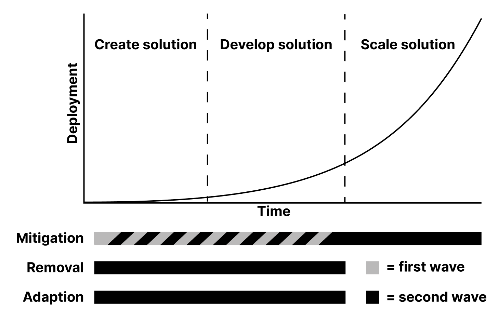
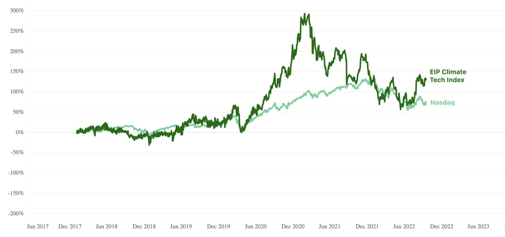
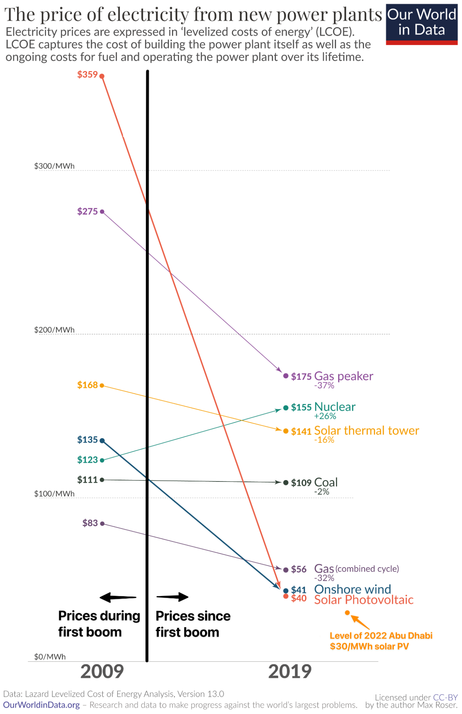
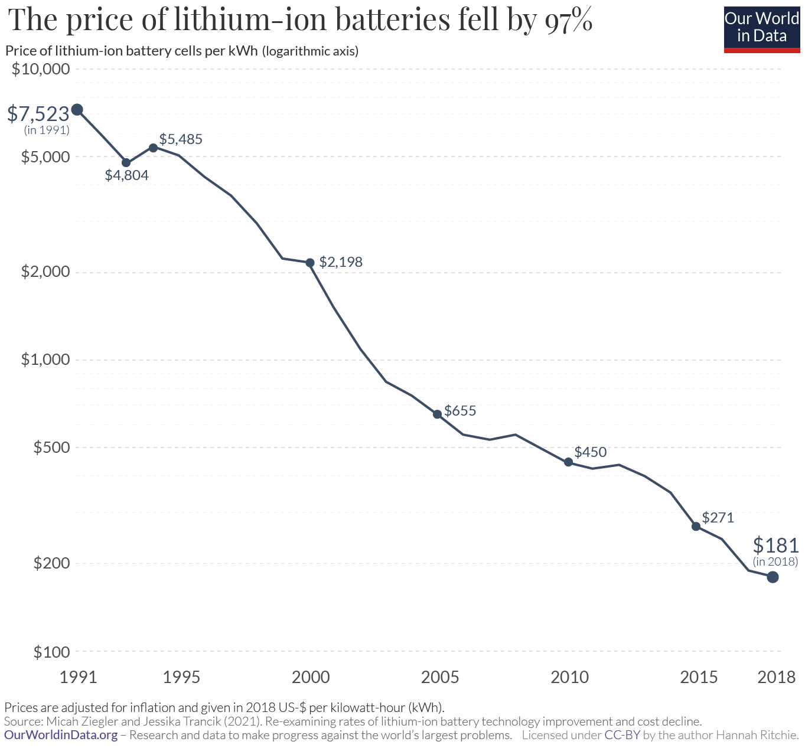
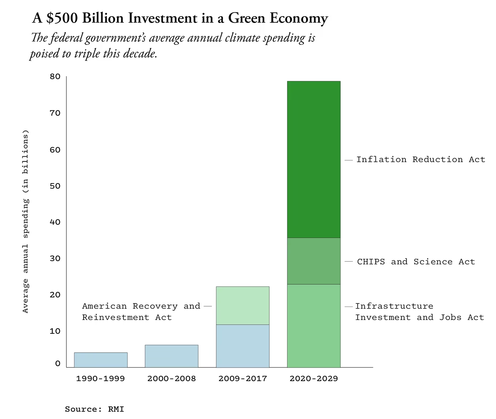
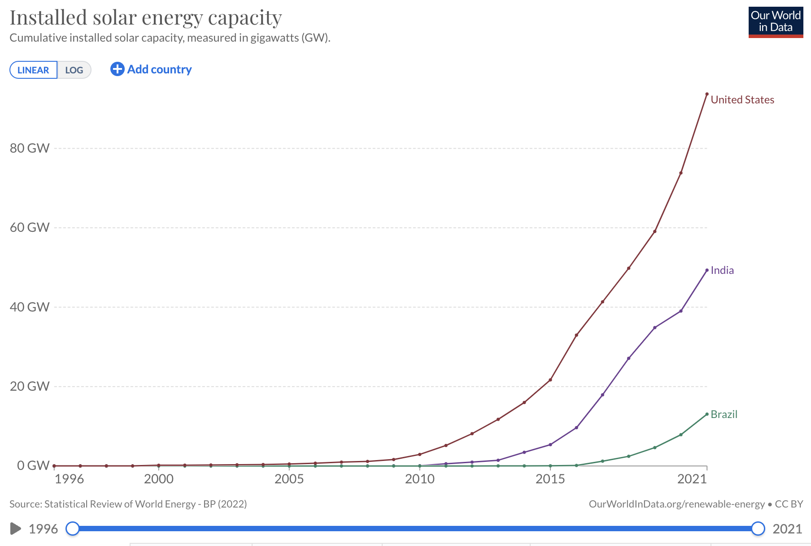

The past, present, and future of climate investing
Part 3 - Changing trends
By Neil Hacker
We are currently in the second great climate investing boom. Climate tech VC estimates that since the start of 2021 they’ve “tracked ＄27B of venture funding across 844 early stage (Pre-Seed through Series C) climate deals”. If you compare this to the peak funding amount during the first wave, which happened in 2008, at around ＄4bn you can see that things have scaled up a lot.
If we look at the three stages of technology development and the three broad buckets of climate solutions we can also see changes. In the first wave mitigation technologies were the only real investable areas and the fight was still on to try to create and develop these. Today many of these have matured and these will likely be where the majority of our progress towards targets like net-zero will come from. However, as far as new technologies go mitigation is far from a spent area, and will likely still contribute the majority of an investors portfolio.

There are two other buckets which, while potentially being lower amounts of a portfolio than mitigation options are important in different ways. Removal refers to various ways we can try to take CO₂ that is already in the atmosphere and get it back out permanently. This sector didn’t really exist back in the first wave and for largely good reason, most approaches to this problem are energy hungry and so until you have carbon free energy the progress you can make is often limited.
Adaption is another sector that, while also still small today, isn’t really represented in the first wave portfolios. Adaptation here refers to funding companies that instead of aiming to lower greenhouse gas levels or try to remove existing CO₂ aim to help companies and communities face the challenges climate change is inevitably bringing (and in many cases has brought) our way.
The first two posts in this series looked at the first wave of investing in climate tech and some of the trends they were riding and the headwinds investors hit up against. This post is going to look at what has changed to some of those headwinds from the first wave and then what new trends have developed driving this wave of investing.
Ecosystem changes
If you go back to the second post in this series you’ll see I laid out some issues with the climate tech market back in the first wave. Just to summarise these were roughly:
- Commodity markets are hard
- Scaling takes a lot of time and money
- The exit landscape wasn’t mature
- Many companies were in parts of the value chain that was subject to brutal competition not just from traditional commodities like natgas but other renewable technologies like chinese solar PV
Have any of these areas improved?
Commodity markets are still hard. They are always going to be incredibly difficult to compete in, being literally defined as areas where the only differentiating feature of a product is price, so you’re not going to be able to win over consumers in any other way than pure bottom line performance. This really was the killer of a lot of investments in the first wave, biofuel was competing against oil, then oil fell in price [there were other issues as part 2 discussed], new types of solar were competing against PV and then polysilicon fell in price.
This is still pretty much true today, commodity markets are still very very difficult, but it may be somewhat less true than before. Firsty not all energy and electricity is actually a commodity. Fossil energy is very much a commodity with global oil and to a large extent natural gas markets, but renewable energy is still much more regional, and in some cases could be closer to national.
Commodity markets are ones where you can’t differentiate on anything other than price but renewables clearly do differentiate themselves in some ways. The main differentiating factor is that all countries can produce renewable power whereas not all countries can produce oil or natural gas. This means renewable energy provides a significant pathway towards a country getting higher levels of energy independence which given certain geopolitical issues, i.e Ukraine, is a goal more and more countries desire. This makes technologies like advanced geothermal, fission, and fusion, all of which offer nationally generated baseload power increasingly valuable to countries and consumers.
You could say that the above all applies to solar as well, you generate the electricity nationally, no CO₂ emitted, which is all true but I think baseload suppliers are fundamentally different in this respect. This largely comes down to (1) national security issues, no matter how good a chinese company is at making small modular reactors I do not see the US being keen to buy them, and (2) physical colocation of production of energy and companies involved in producing that energy. You can ship solar panels from China that work just as well in America but for things like Geothermal there is a large degree of necessity to actually be constructing tech on the ground, or at least doing physical surveys of underground conditions.
There are also some other areas which are less “pure” commodity markets but still compete vigorously on price where the higher quality climate options are winning market share. While I don’t think we are anywhere near an actual commodity market in carbon removal and offsets yet, many are treating it as such and yet there are buyers out there who are willing to pay a much higher (10-100x) price for high quality permanent carbon removal than what they could pay for lower quality offsets or removals. In the next post we’ll look more at just who these buyers are and why they might have such a high willingness to pay.
Next we can take a look at the scaling issues, namely it takes too much money and it takes too long to scale. In certain areas, say fusion, these features will almost certainly still be the case. This isn't necessarily a problem as long as the potential company on the other side can justify it, which in the case of fusion is at least very plausible. VCs also have more money in absolute terms to put towards climate than was the case in the first wave.
What is true is that there is now more available capital out there to support companies but those looking to raise significant amounts still need to be able to justify themselves. Making a large successful company is not necessarily any easier today but if you have an idea there is a more developed ecosystem of funding to help you get to scale.
But what about timelines? There are a few trends that I think have, for some companies, changed this piece of things. Firstly, iteration cycles have come down in some sectors. Chris Sacca has talked about a team they backed working on electric planes being able to start their company mainly working in just simulations because compute power is just so much higher today than it was 10 years ago.
A second trend is that some companies are able to bring their revenue forward to a greater extent than companies could in the first wave. Groups like Frontier are creating offtake agreements with scaling carbon removal companies so that they have a greater guarantee of future revenue. Boundary Layer, a maker of zero emissions ocean liners, has letters of intent from companies like Schneider Electric. Heart Aerospace, a company trying to make electric planes, has already got an order for 200 from United.
Bringing revenue forward does not necessarily make building the final product easier but it does de-risk the early part of the journey by giving companies the resources they need to survive and a clear path to revenue.
While some companies are bringing revenue forward, exits are also being accelerated, and this is another change from the first wave. The most common way this is happening is through special purpose acquisition companies (SPACs) which allow companies to go public partially based on forward looking growth projections. This can be especially useful for startups that need access to a lot of liquidity to fund growth but may not have enough revenue yet for the more traditional IPO path, although there are some notable cases where this may have happened too soon and with too little diligence. This is somewhat a double edged sword, SPACs can genuinely be a useful tool for raising money but too many going badly risk a narrative blowback on entire sectors.

Climate companies are also just doing well in the market. The EIP climate tech index which tracks “the performance of public companies primarily involved in providing technology that supports global decarbonization” has outperformed the Nasdaq over the last 5 years, and this is not just due to Tesla’s meteoric rise as it is an equal weighted index. Having climate companies performing well in the public markets is a signal that these companies can truly compete in the real world and a confidence boost to up and coming startups.
New trends
The first wave was mainly built upon high fossil fuel and commodity prices (including polysilicon), Obama era government incentives and the view that certain green technologies could preempt more radical societal demands and government regulation while having a reasonable path to becoming cheaper than current options.
The new trends are roughly
- Exponentially falling green energy and storage prices breaking cost parity with fossil fuels in places
- Progress across domains, mainly compute getting cheaper, AI advances and biology
- Network effects materialising
- Vastly increased support from governments
- Success stories to point to
- Quickly developing countries looking for ways to avoid being tied to fossil fuels
Energy
You could say this is just a continuation of a trend that was present in the first wave but the sheer scale of cost decreases since then (>90%) means I’m going to treat it as a whole new thing.

The first wave was largely about trying to make cheap renewable power. Solar PV was around 3 times more expensive than coal during the first wave. Today the story is very different, renewables are now, in some places, the cheapest source of electricity in the world and the number of places where that is true is growing each year with further cost declines. This represents an inflection point. While solar and wind are themselves mature sectors they now enable companies to come up with versions of products that consume electricity and ride a wave of increasingly lower costs, or in catchier terms “electrify everything”. *[“everything” is somewhat tongue in cheek as the energy densities don’t fully work out for many applications but you get the point]
It’s not just renewable sources that have seen such steep cost declines, batteries (especially lithium ion) have been right there with them falling exponentially in costs.

Some sectors/companies have ridden this wave already. Think of Tesla which realised you could get a head start if you went for more premium models first thus obscuring the price difference between battery/combustion engine and then you rode, and contributed to, the wave of battery tech getting better and better.
The above trend also represents a virtuous cycle of these two enabling technologies where we have solar cheaper → more demand for batteries → batteries cheaper → solar becomes better value → drive down each other's unit costs. Historically predictions on continuing solar cost declines have been immensely off, prices in 2020 were arguably lower than the IEA 2010 prediction thought could ever be achieved. While future progress is never guaranteed the future declines in the cost of renewable power and batteries look set to continue and so the question for the current wave of investments is often how to capitalise on these trends. What other areas could benefit from electric power that incumbents currently aren’t willing to swap over too?
Scientific and compute advances
Advances in biology are enabling new kinds of companies to be created. Since the first wave our ability to manipulate biological systems has increased dramatically. It is now much easier to create new enzymes which can act as catalysts to industrial processes (solugen), culture mammalian cells to create meat alternatives (mosa meat) or create microbes to do our bidding (Kula Bio). Even today this is still a relatively nascent area but the ability to manipulate natural systems and entities gives companies powers that previous techniques simply lacked. We’ll come back to this in later posts but other industries like mining, CDR, and regenerative agriculture are all areas where the expanding powers of biology can be applied.
In 2010 the best microchip had ≈4bn transistors (a measure of compute power), today that number is closer to 50bn (more than a 10x improvement), and the rise of cloud computing has meant it is easier than ever for companies to gain access to compute resources that match their needs as the scale without having to worry about having to set up their own physical servers. This lowers the barrier to many types of companies to grow and iterate on their product. So not only are we making huge advances across different domains that can be applied to the climate but access to these abilities is easier for potential founders to reach.
AI has also improved from what was in 2010 a field many thought had stagnated, to one of the fastest developing areas today. Most climate solutions will still need to touch the physical world but AI does allow better use of existing data sources mainly in two ways, prediction and efficiency.
Prediction of weather events, energy demand or other factors is becoming more and more important to build resilience into every part of our economy from food chains to power networks. AI systems allow for this to be done more accurately saving both time, money, and in some cases possibly lives.
As the amount of data across every part of the economy increases, making sense of it also becomes more complicated. If you own a building or sell smart appliances, how can this be run more efficiently? Again AI is starting to be able to tie insights across huge data streams together to optimise energy use at various different scales from buildings to networks.
To be fair though AI can actually be applied in ways that very much touch the physical world as well. I mentioned Solugen above who engineer enzymes for industrial processes, well from their website they say “we use AI to engineer enzymes and metal catalysts that can bypass the limitations of traditional fermentation”. When many people hear AI they might think of some of the more glamorous things like GPT-3 writing text or AlphaGo beating the world champion in Go, but in a narrow sense AI can simply be the best way of searching through some option space against a set of constraints. This then applies very well to potential problems like finding new catalysts for industrial processes, it’s still messy and difficult to then actually create and scale these but AI systems can speed up where you start looking.
Networks
Many classic VC backed businesses try to take advantage of network effects, this just means situations where a product a company offers gets more valuable to all the users as additional users join. One classic case of this is Airbnb, if there’s only 10 hosts that provides very little value to any potential user, but if there are 10 million then suddenly users can go almost anywhere on the planet.
Not all companies have this quality and this was especially true among most of the climate tech investments in the first wave. However, as we have seen the expansion of everything from smart appliances, electric products, and renewable infrastructure it will be more and more the case that these form natural networks that a company can come along and try to serve, creating dynamics much more akin to other sectors VCs operate in.
For example, the more users you have in a demand response network e.g through an EV charging network, the more effective the network can run and the better user experience it is for those participating in it. Or the more users a virtual power plant has the better they can allocate their power supply and the more savings they can pass onto customers as the volatility of use falls.
Scale of support
This is another element that was around in some form in the first wave of investing but is simply so much larger today that I think it warrants new emphasis. We are looking at an increase of 5-10 times the amount the US government was spending during the first wave of climate tech. A lot of this is aimed at already more mature areas such as solar or EVs but a lot of this spending is focused on helping bridge the gap for new technologies to develop, commercialise and scale.

Source
However, we have to be aware that while most companies can’t rely on the US government for their success, you could at least view this spending as making it less likely that foreign companies (mainly Chinese) are able to use the backing of their government to outcompete US firms.
This is largely what happened in the solar industry. As an investor you may have preferred investing in solar companies that you could see getting down the cost curve quickly but in aggregate VCs only had a few billion to deploy. Compare this to the Chinese government who by 2017 was subsidising solar production, through feed in tariffs, up to $15bn per year. The US taking a more active role may still not be something you want to rely on but it might just even the playing field a bit more.
Success stories
Another thing this wave has that the previous one didn’t is examples of genuinely massive successes in the climate space. I spoke about Tesla a fair amount in the first post but I’ll mention it again here, as an investor you are looking for companies that could be truly large if they succeed and Tesla shows that “truly large” could be even bigger than people had thought.
The effect this has for climate investing might be somewhat mixed though. It has undoubtedly drawn more investors and more money into the ecosystem which can make the whole thing healthier but with this comes increased competition. For the better investors this is likely a good thing and for everyone else this may have made things more difficult.
Developing country growth
The last new trend I’m going to talk about is the rapid growth of certain developing countries and especially their rapid uptake in renewables as a proxy for current and future potential for new companies. It took the USA 6 years to go from 1GW to 10GW of solar capacity, India did it in 4 and Brazil did it in just over 3. These are countries with huge populations where the citizens are becoming richer, in India's case very quickly by global standards.

Historically in other sectors it has been at the same time difficult and lucrative for VCs to make money in other countries. Firms like Sequoia and DST global have had incredibly successful returns though investing in the Chinese tech sector, other firms have had success looking for the “this of x”, e.g the doordash of India or the Monzo of Brazil.
I am not saying the exact same thing is going to happen here. Already things like the “Tesla of China” exist, it’s called BYD and has a market cap of around ＄90bn. There are also already monsters in other climate tech areas like batteries where CATL, a company founded in 2011 (just at the end of the first wave in the USA) has a market cap of ＄140bn, easily beating all climate tech companies actually founded in the 2007-12 period in the USA combined.
There are still so many opportunities in these countries that weren’t around in the 2010 period, increasing access to solar in India, expanding EV penetration in Nigeria, or creating virtual power plants in Brazil, these all offer huge markets and these types of companies can help these countries to not go down the route of being locked into fossil fuel infrastructure creating even more long term climate benefits.